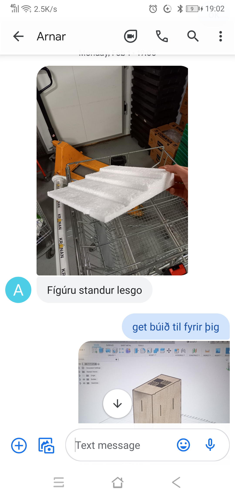
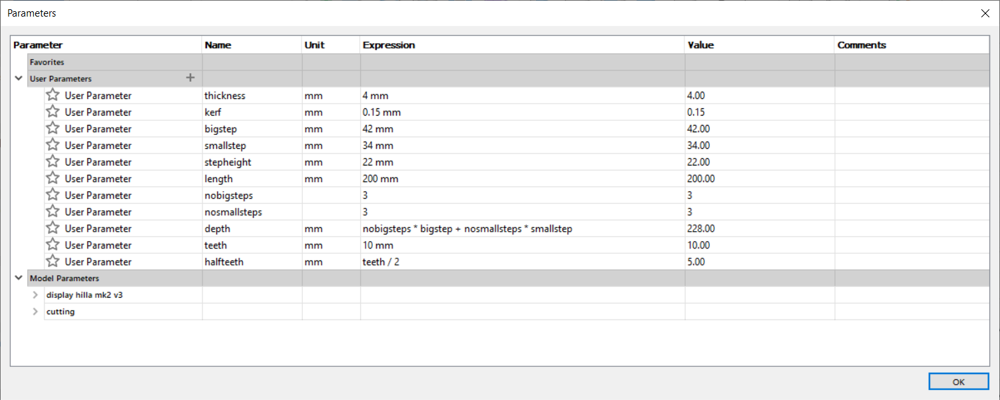

Project 2
My CAD project
I had a simple problem that I think alot of people have. My desk space is limited and the 2 major things where both linked to my hobby. I have brushes and tools all over the place and the airbrush pump takes quite a space. 2 potential items came to mind: a wall mounted holder for tools, pencils, brushes and more and a "8" shaped sitting shelf for the airpump and transformer with hose and airbrush holder.
I started by going for the easyer of the 2 which was the 8 shaped shelf. I first made a rough sketch of the product. I then made a several mesurments of the transformer since it needs to fit neatly inside of the lower 8 hole and then the pump. Both have a powercord connecting them and to and outlet. since this will go to the corner of my desk I will need to have some leeway for the cord aswel2l as cut in to the shelf itself to go out. It will have a openable top to take the pump out and fitting it in its place and a hole in the shelf between for cable management. then as a Team of 3 we had also made a kerf mesurment test that can be found here Calculating KERF.
And after all that whent away as soon as I found out it was going over my alotted plywood (300x600). So I needed a alternitive, I had infact made a sideproject for a friend after a simple picture.
Looked simple enough, it wasnt. This became a 14 piece incased model stand. without all the minutiae the prosses is simple and easy to repeat.
Order of operation
- Set every parameter you can
- Set a special kerf peramiter accounting for the diameter of the laser (0,015mm in my case)
- Make the intended product
- Lay it flat with either the align function or the nest function
- Make a single sketch of the entire product and use the offset function to account for kerf
- Export that sketch as a dxf file
- Open it in inkscape and set it up for cutting
- In case of duplication delete one of the dupes
- Make the line thickness 0.02mm in the outline setting
- Save the file as a pdf and optionaly add borders to it 321
- The laser cutter must by setup and set the start point
- Start cutting
- The components will need to be gently hammered into place and sand the corners if needed
- Enjoy the product of your labor

Its important to note that when a slot is cut for a insert the hole is not a perfect rectangle but a squircle and the insert will be a rectangle. After assembly I note varius deffects in the product and found that there were mainly things that can be fixed, maximised even. I noticed then that there was a error in the size of certain points for ideal use. The walls werent straight, account for warping when cutting and in raw material and finaly try be more efficient with a 300 by 600 plank
The next step is easy. Do it again, do it better. Stay tuned.
The MK2 was a success but had it's own issues. The increase in step height made the size of the sides and had me going over the 300x600 plywood. I had made the the back of each step smaller to save on wood but it was not enough. I desided to remove the back of the piece as it was made to be used against a wall. I fixed the bad walls with some better teeth location and the stepheight.
The MK3 is going to be optimized for retail. the 50/50 split on stepdepth is not as retail friendy as simple steps and while in the Mk1 the first step was bigger then the rest the first strep is unnecessary.
- © copyright WIP
- Design: HTML5 UP